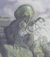

Welcome to the Home Page of J. Orlin Grabbe. . . inspecting the global underbelly: privacy, money laundering, espionage. |
Bob Debates the Anti-Bob The Anti-Bob: Look at what my opponent has done. He has created his stooges on the Left and the Right, and then positioned himself smack dab in the American beer-guzzling, TV-watching, skirt-chasing middle, where he is sure to win all the votes!On the Left is the wooden Al Gore, the alpha male "fighter", who is the scion of a political family that served the policy needs of Armand Hammer, the millionaire head of Occidental Petroleum and financier of the Communist Party in the US. Al Gore is being dangled before the triadic jaws of organized labor, blacks, and women. They had better watch out before they get splinters in their mouths! But meanwhile he buys their votes with public offers of more free government stuff. On the Right is the preppy puppet George W. Bush, the dim-witted inarticulate opponent of "bigacy", who is being dangled before the triadic jaws of big business, the Christian Right, and the anti-Clinton crowd. He buys their votes with promises of miniscule tax cuts, when his only agenda is to get the Bush crowd back in power, so he can milk the Great American Taxpayer Cow. His goal is to ensure that lucrative government contracts get funneled to friends of Bush! Behind the scenes, he buys votes with promised deals of more free government stuff. Meanwhile, Bob sits calmly in the middle, picking their pockets, and sucking in the Sex Vote all for himself. This is absolutely disgraceful! He wins no matter who "wins"!
Bob Responds:
My worthy opponent is just jealous that his handlers didn't think up the Get-More-Sex
campaign. But it occurs to me what his main problem is: namely, he doesn't
believe in democracy! Offering more voters more and more free-government
stuff is the American Way! Is not my opponent, the Anti-Bob, therefore un-American?
He says I control both Gore and Bush. Is this not Conspiracy Theory? He takes
apparent issue with my Get-More-Sex plan. Is he not therefore anti-sex? Is he
not therefore just another frustrated, prudish old hypocrite who would send our
young people out to die for their country, but wouldn't let them live and
f--- for their country?
The American people know better than this. The American people know that a
regular weekly program of orgasmic relaxation therapy in a safe, clean,
government-run health-clinic-and-house-of-joy will do wonders for keeping
their minds off the fact we are stealing most of their money! The American
people know what they want! They don't expect to pay taxes and pay taxes and
pay taxes, and never get any free government sex!
Those in the audience should listen carefully. My opponent, the Anti-Bob, wants
to take away your right to sex!
|